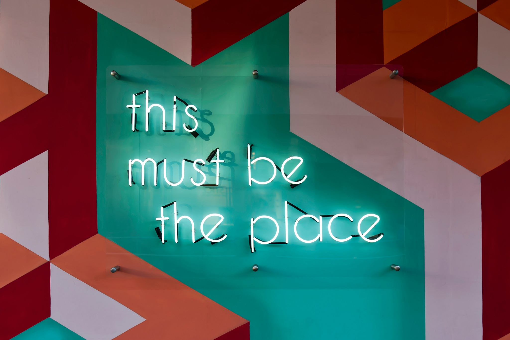

狐狸窝
导航
技术相关内容
随笔
MC Mod开发系列视频
Vlog
Mcjty教程翻译
小说
B站空间
Minecraft私有服务器
联系狐狸
GitHub
导航
技术相关内容
随笔
MC Mod开发系列视频
Vlog
Mcjty教程翻译
小说
B站空间
Minecraft私有服务器
联系狐狸
GitHub
Home
MC教程翻译
MC Mod开发系列教程视频
小说
随笔
/blog/vlog.html
前端技术相关内容
分类/系列
时间线
004-Sum of positive
005-Counting sheep...
006-Dubstep
007-Moving Zeros To The End
008-Consecutive strings
009-Counting Duplicates
010-Take a Ten Minute Walk
011-String Mix
012-The observed PIN
前端技术相关内容
Minecraft我的世界私有服务器
导航
联系方式
#
分类/系列

百题挑战
Vue相关
其他
#
时间线
百题挑战
012-The observed PIN
百题挑战
011-Strings Mix
←
/blog/vlog.html
004-Sum of positive
→